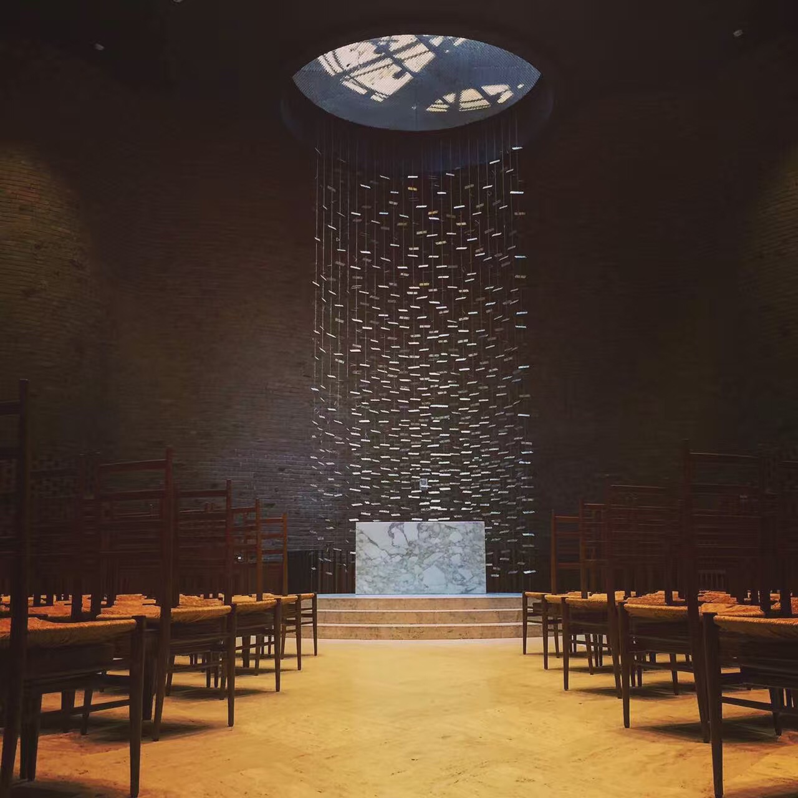
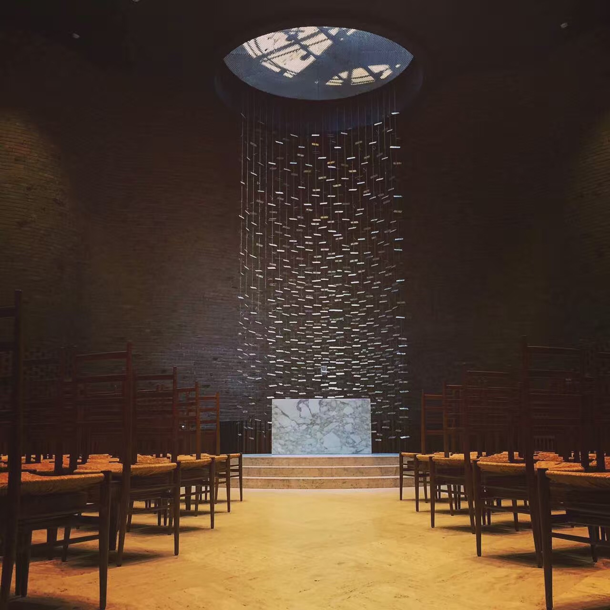

A cellist in college orchestra. Once got full mark for the course Western Music History.
At the sametime attended courses like Opera Appreciation, Tradition and Popularity of music, Performance and Appreciation of Theatre Arts.

Huge enthusiasm for sci-fi books, Tv series and movies. Whovians. Trekkie. Sometimes will think whether we live in the Matrix. Also a big fan of Lord of Rings.

Crious about people's mind and behavior, self learned some pyschology and got a certificate for online course.

Enjoy traveling. This summer I came to boston and had stole a glance at Media lab in MIT. Fantastic! By the way, the Chapel looks great too.
 
